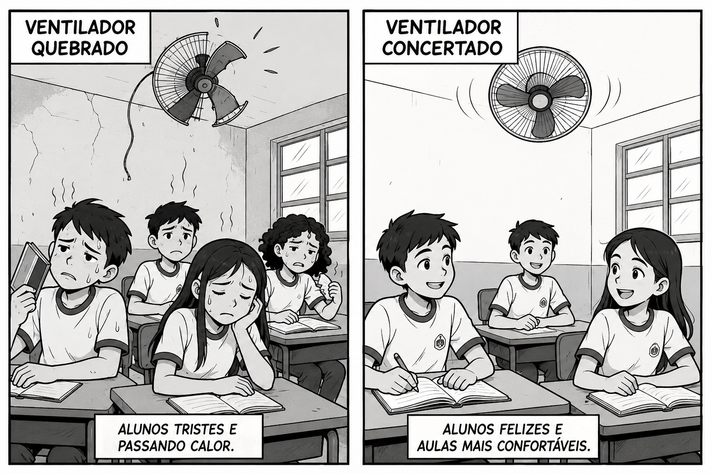
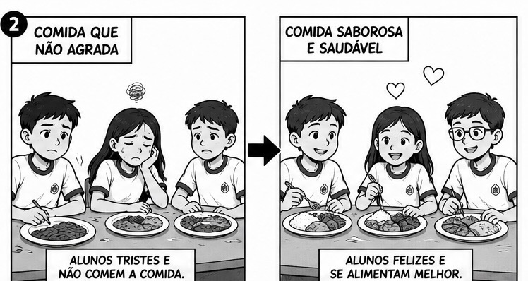

GAME-SABER
// DESENHO 01pequenas atitudes grandes transformaçoẽs
O QUE NÓS PODEMOS FAZER PARA TORNAR NOSSA ESCOLA AINDA MELHOR?

quando nos unimos com resonsabilidade e cuidado,
transformamos nossa escola em um ambiente limpo, acolhedor e inspirador para todos.
GAME-SABER
// atividade 02NOSSA ESCOLA NOSSO COMPROMISSO
O QUE NÓS PODEMOS FAZER PARA TORNAR NOSSA ESCOLA AINDA MELHOR?

devemos manter o espaço escolar limpo e sem sujeira
.
o banheiro é um lugar de higiene temos que manter limpo.
GAME-SABER
// atividade 03NOSSA ESCOLA NOSSO COMPROMISSO
O QUE NÓS PODEMOS FAZER PARA TORNAR NOSSA ESCOLA AINDA MELHOR?

Podemos cuidar do nosso colégio mantendo os espaços limpos
e respeitando professores, funcionários e professores.
GAME-SABER
// atividade 04NOSSA ESCOLA NOSSO COMPROMISSO
O QUE NÓS PODEMOS FAZER PARA TORNAR NOSSA ESCOLA AINDA MELHOR?

As salas de aula poderiam ter mais recursos para
deixar as aulas interessantes e facilitar a aprendizagem.
GAME-SABER
// atividade 05NOSSA ESCOLA NOSSO COMPROMISSO
O QUE NÓS PODEMOS FAZER PARA TORNAR NOSSA ESCOLA AINDA MELHOR?

as salas podem ter recursos melhores para os alunos
não ficarem com calor.
GAME-SABER
// atividade 06NOSSA ESCOLA NOSSO COMPROMISSO
O QUE NÓS PODEMOS FAZER PARA TORNAR NOSSA ESCOLA AINDA MELHOR?

A escola poderia oferecer uma alimentação mais
saudável e variada para os alunos.